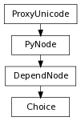

class counterpart of mel function choice
The choice command provides a mechanism for changing the inputs to an attribute based on some (usually time-based) criteria. For example, an object could be animated from frames 1 to 30 by a motion path, then from frames 30 to 50 it follows keyframe animation, and after frame 50 it returns to the motion path. Or, a revolve surface could change its input curve depending on some transform’s rotation value.The choice command creates a choice node (if one does not already exist) on all specified attributes of the selected objects. If the attribute was already connected to something, that something is now reconnected to the i’th index of the choice node’s input (or the next available input if the -in/index flag is not specified). If a source attribute is specified, then that attribute is connected to the choice node’s i’th input instead.The choice node operates by using the value of its selector attribute to determine which of its input attributes to pass through to its output. The input attributes can be of any type. For example, if the selector attribute was connected by an animation curve with keyframes at (1,1), (30,2) and (50,1), then that would mean that the choice node would pass on the data from input[1] from time 1 to 30, and after time 50, and the data from input[2] between times 30 and 50.This command returns the names of the created or modified choice nodes, and if a keyframe was added to the animation curve, it specifies the index (or value on the animation curve).
specifies the multi-input index of the choice node to connect the source attribute to. When queried, returns a list of integers one per specified -t/time that indicates the multi-index of the choice node to use at that time.
Derived from mel command maya.cmds.choice
the name to give to any newly created choice node(s). When queried, returns a list of strings.
Derived from mel command maya.cmds.choice
specifies the attribute to be used as the choice node’s selector. The value of the selector at a given time determines which of the choice node’s multi-indices should be used as the output of the choice node at that time. This flag is only editable (it cannot be specified at creation time). When queried, returns a list of strings.
Derived from mel command maya.cmds.choice